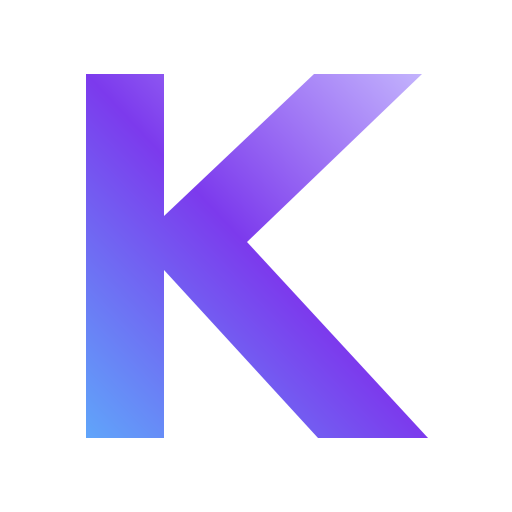

Copying data
Moving the same information between spreadsheets, CRMs and business tools.
KINETIX designs automation systems that connect your CRM, operations, data and AI—reducing repetitive work and turning fragmented processes into one reliable workflow.
Moving the same information between spreadsheets, CRMs and business tools.
Remembering who needs a message, task, approval or status update next.
Reading documents, screening records or producing reports one by one.
Critical data living in tools that do not reliably communicate with each other.
Not another tool for your team to manage. We design the connections, logic and intelligence between the tools you already use.
Replace repetitive handoffs with reliable workflows across sales, operations, recruitment and administration.
Turn your CRM into an operating system for the business instead of a passive database.
Use AI where it creates real leverage: screening, extraction, classification, reasoning and assisted decision-making.
Connect platforms that were never designed to work together using APIs, webhooks and custom integration logic.
Examples are based on systems built across recruitment, operations and data-processing environments.
A connected recruitment workflow spanning inbound channels, automated screening, deduplication, CRM records, data storage and interview scheduling.
Centralized project, task, request and escalation management with automated synchronization and leadership reporting.
Documents move from Telegram and cloud storage through OCR, cleaning, structured storage and a live operational dashboard.
Map the current process, tools, data, bottlenecks and business rules.
Design the target workflow, integrations, controls and exception paths.
Implement the automation, validate edge cases and make failures visible and recoverable.
Deploy, monitor and refine the system as the operation evolves.
Describe how your business currently works. Kira will help identify repetitive steps, disconnected systems and practical automation opportunities before you speak with Danica.

ENGINEERING × AUTOMATION × AIKINETIX is an independent automation practice focused on designing practical systems—not selling AI for the sake of AI. The work combines workflow engineering, CRM architecture, APIs, data processing and intelligent automation.
Danica brings an electronics engineering and project leadership background into systems work, with hands-on experience building automation across n8n, Zoho CRM, GoHighLevel, Make, APIs, Python and AI models.
View technical portfolio ↗We’ll figure out whether it should be automated—and what a sensible solution could look like.